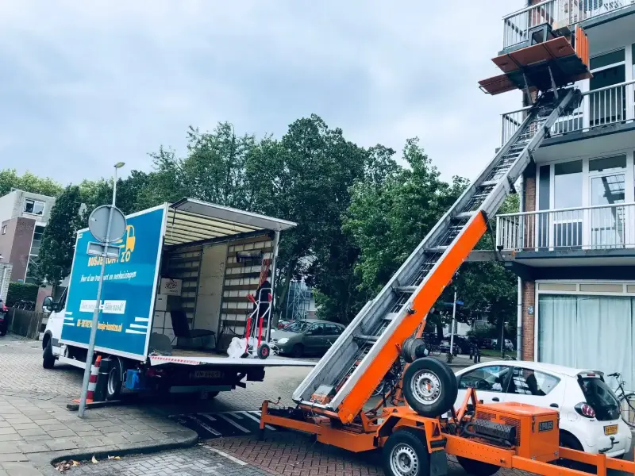
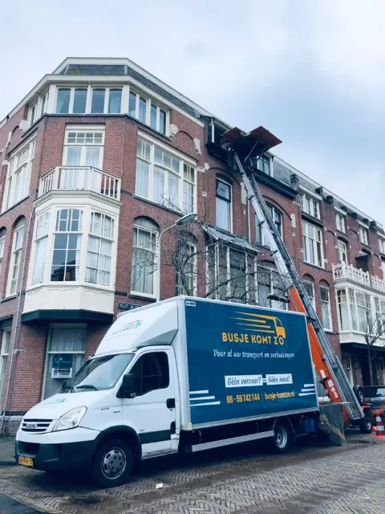
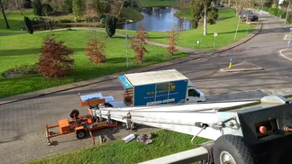
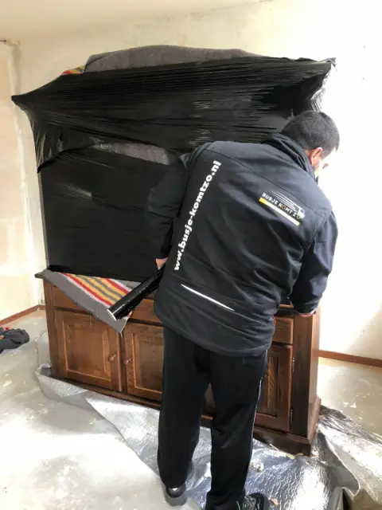
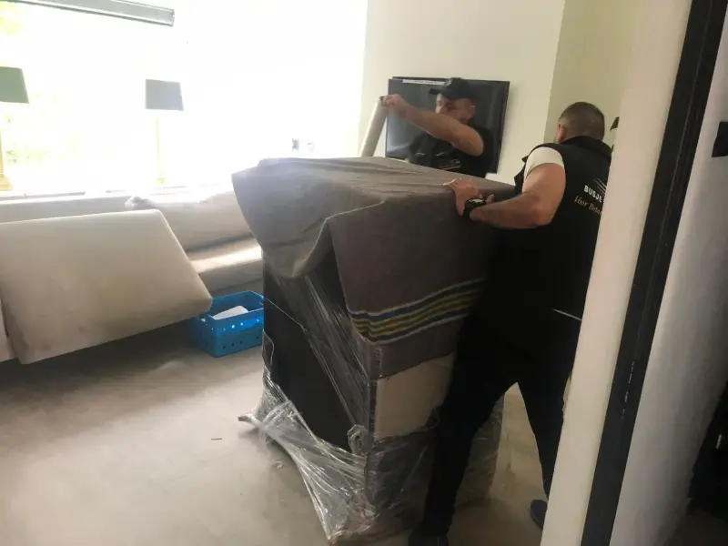

Particulier verhuizen
Appartement, eengezinswoning of studio, met of zonder lift. Wij dragen, rijden en zetten alles op zijn plek.
Wij komen langs, bekijken uw inboedel en leggen één bedrag vast. Geen nacalculatie, geen weekendtoeslag en geen voorrijkosten binnen Utrecht.

Deze foto's zijn door het bedrijf aangeleverd en tonen echte verhuizingen, eigen materieel en zorgvuldig beschermd meubilair.



Klanten in Utrecht en omgeving geven onze verhuizers een 4,9 op Google en een 9,6 op Trustoo. Dit zeggen ze over hun verhuizing met Busje komt zo.
“Wat een topervaring bij Busje Komt Zo. Van de eerste offerte tot het monteren van de laatste kast was alles 10/10. Duidelijke communicatie, nette en zorgvuldige aanpak en een super service.”
“Top verhuisbedrijf. Het was allemaal snel geregeld zonder dat ik allerlei vragenlijsten moest invullen. … Ik had echt veel spullen, maar heb nog nooit zo'n efficiënte en vlotte verhuizing gehad.”
“… Prima job, goeie gasten, deden voorzichtig met m’n spullen, geen schade, geen klachten. Uitladen op 2 adressen was geen probleem, ruim binnen de tijd klaar, zonder stress. Van harte aan te bevelen dus.”
“Top ervaring! Hele professionele aardige mannen. Werken netjes en efficiënt. Zou ze absoluut aanraden.”
“Vriendelijk, netjes gewerkt, op tijd en vlot met de montage.”
“Hard gewerkt en een grote verhuizing snel en zorgvuldig uitgevoerd.”
Kies wat u nodig heeft. Twijfelt u? Bel of app ons, dan zeggen we eerlijk wat bij uw situatie past. Alle diensten bekijken
Appartement, eengezinswoning of studio, met of zonder lift. Wij dragen, rijden en zetten alles op zijn plek.
Kantoor of bedrijfsinventaris, gepland op een moment dat uw werk zo min mogelijk stilligt.
Smalle trap of een grachtenpand? Dan gaat uw inboedel veilig via het raam naar binnen of buiten.
Zit er tijd tussen twee sleutelmomenten? Uw inboedel staat droog en veilig opgeslagen.
Wij pakken in, beschermen breekbare spullen en pakken op het nieuwe adres weer uit.
Moet het morgen al? Bel ons direct, dan hoort u meteen wat er nog mogelijk is.
Woning of bedrijfspand helemaal leeg en bezemschoon opgeleverd, inclusief afvoer.
Eén meubelstuk of een losse lading die snel ergens anders moet zijn? Dat rijden wij ook.
Kies de route die bij uw aanvraag past. Daarna controleert u beide adressen, bereikbaarheid, volume en gewenste hulp.
Beschrijf vertrek en aankomst afzonderlijk. Etage, lift, loopafstand en laadruimte kunnen per adres verschillen.
Controleer een route binnen UtrechtGeef ook de aankomstzijde volledig door, zodat toegang, verkeersruimte en mogelijke voorbereiding beoordeeld kunnen worden.
Verhuisbedrijf Utrecht: zo werken weLaat de volledige route beoordelen. De afstand alleen vertelt nog niet hoeveel tijd, mensen of voertuigruimte nodig zijn.
Bereken eerst het verhuisvolumeDe Brauwlaan 4, 3526 XS Utrecht. De kaart van Google laadt pas na uw klik.

Een goede offerte begint niet bij uw telefoonnummer, maar bij de verhuizing zelf. Beschrijf beide adressen, de bereikbaarheid en wat er meegaat. Zo kan uw aanvraag gericht worden beoordeeld.
Verhuisbedrijf Busje komt zo is een familiebedrijf uit Utrecht met meer dan 15 jaar ervaring in verhuizen. Als verhuisbedrijf in Utrecht helpen wij particulieren en bedrijven bij hun verhuizing, binnen de stad en naar de regio: Nieuwegein, Houten, Zeist, De Meern, Maarssen, Amersfoort, Hilversum en Amsterdam.
Wij verzorgen particuliere verhuizingen, zakelijke verhuizingen en bedrijfsverhuizingen, en ook spoedverhuizingen als het snel moet. Desgewenst nemen wij u al het werk uit handen, van het in- en uitpakken van uw inboedel tot de montage en demontage van meubels. Woont u op een hogere verdieping, dan kunt u bij ons een verhuislift huren. Ook voor een woningontruiming of ontruiming na een overlijden kunt u bij ons terecht.
Bij Busje komt zo werkt u met een vast team, vaste tarieven die vooraf duidelijk zijn en volledig uitgeruste verhuiswagens. Daarom waarderen onze klanten ons met een 4,9 op Google en een 9,6 op Trustoo. Vraag vandaag nog vrijblijvend een offerte aan voor uw verhuizing in Utrecht of omgeving.
Duidelijke antwoorden op de meestgestelde vragen over verhuizen in Utrecht en omgeving.
Staat uw vraag er niet bij?
Bel of app ons. U krijgt snel persoonlijk antwoord van Busje komt zo.
Ja. We spreken vooraf een duidelijke, vaste prijs af nadat we uw verhuizing hebben beoordeeld, helder en zonder verrassingen achteraf. Voor kleinere klussen kunt u ook kiezen voor een pakket met een vast uurtarief.
Van uw hoeveelheid (m³), de afstand, de bereikbaarheid zoals etage en lift, en de hulp die u wenst. Vertel ons uw situatie en u krijgt een voorstel op maat.
Dat hoeft u niet zelf te bepalen. Op basis van uw inboedel en de toegang stellen wij het juiste team samen, zodat uw verhuizing vlot en veilig verloopt.
Dat hangt af van het volume en de bereikbaarheid van beide adressen. We plannen efficiënt en bespreken vooraf een realistische tijdsinschatting.
Ja, uw inboedel is verzekerd tijdens de verhuizing. Zo gaat u met een gerust hart de verhuisdag in.
Vaak snel. Een spoedverhuizing hangt af van de actuele beschikbaarheid. Bel of app ons en we kijken direct wat mogelijk is.
Ja. Zware of bijzondere items zoals een piano of kluis pakken we aan met het juiste materieel, eventueel met een verhuislift.
Ja, ook in het weekend, en zonder weekendtoeslag. Geef uw gewenste datum door en we stemmen de planning met u af.